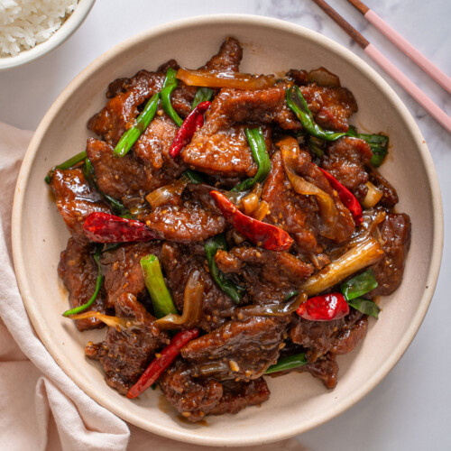

Start my combining the seasoning soy sauce and 2tbsps of water. Then heat the oil in a wok (on med/high heat). Once the meat is browned on all sides add the sauce mixture and broccoli. Then cook until it thickens. After all that you can add the green onions and serve.
